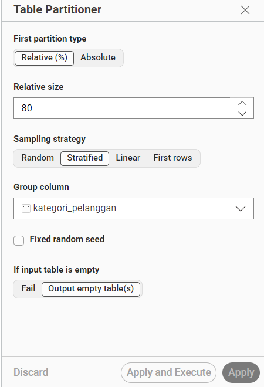
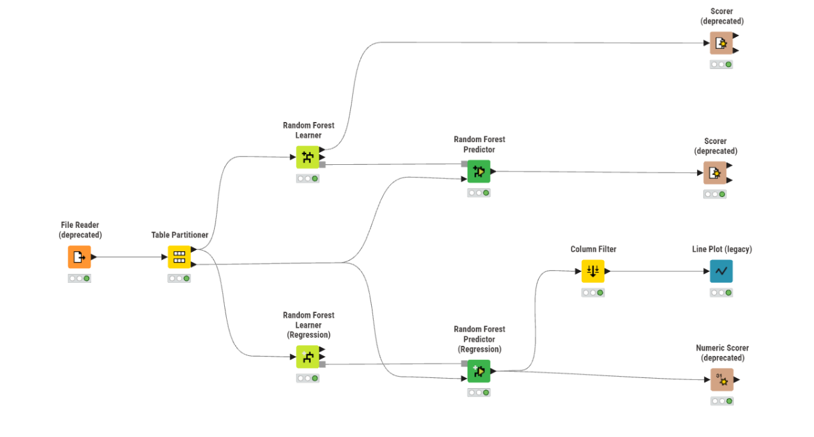
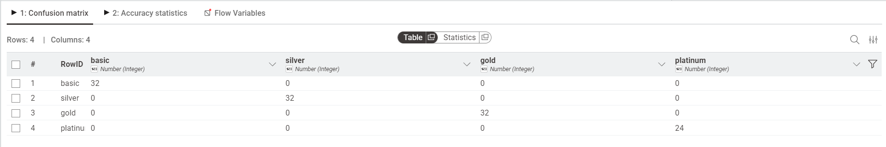
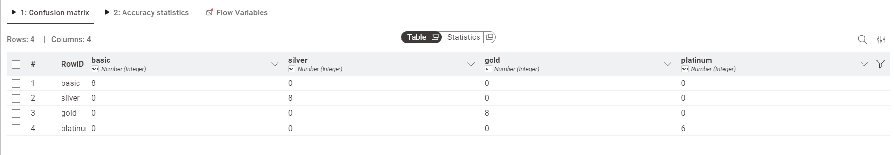
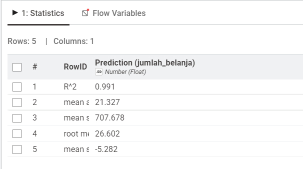

Analisis Data Menggunakan Random Forest#
Dataset#
Dataset yang digunakan adalah Dataset Pelanggan yang berisi informasi profil pelanggan untuk diklasifikasikan ke dalam kategori loyalitas dan diprediksi jumlah belanjaannya.
Dataset ini memiliki 150 baris data, 5 fitur (seluruhnya numerik), dan 1 label bernama kategori_pelanggan yang memiliki 4 nilai kelas.
Berikut seluruh fitur beserta keterangannya:
No |
Nama Fitur |
Tipe Data |
Deskripsi |
|---|---|---|---|
1 |
umur |
Numerik |
Usia pelanggan (tahun) |
2 |
penghasilan |
Numerik |
Penghasilan bulanan pelanggan (dalam ribuan) |
3 |
skor_kepuasan |
Numerik |
Skor kepuasan pelanggan (0–100) |
4 |
frekuensi_belanja |
Numerik |
Jumlah transaksi belanja per bulan |
5 |
jumlah_belanja |
Numerik |
Total jumlah belanja per bulan |
6 |
kategori_pelanggan |
Label |
Kategori loyalitas pelanggan |
Kelas pada kolom kategori_pelanggan terdiri dari 4 nilai:
Kategori |
Jumlah Data |
Keterangan |
|---|---|---|
basic |
40 |
Pelanggan dengan profil dasar |
silver |
40 |
Pelanggan tingkat menengah |
gold |
40 |
Pelanggan tingkat atas |
platinum |
30 |
Pelanggan dengan loyalitas tinggi |
Berikut ringkasan statistik dataset:
Fitur |
Min |
Max |
Rata-rata |
|---|---|---|---|
umur |
21 |
60 |
39.5 |
penghasilan |
3.200 |
12.740 |
7.633 |
skor_kepuasan |
70 |
100 |
82.87 |
frekuensi_belanja |
5 |
44 |
23.5 |
jumlah_belanja |
210 |
1.124 |
648.07 |
Transformasi Data#
Dataset ini seluruhnya bertipe numerik sehingga tidak memerlukan proses encoding kategorikal. Namun, karena fitur memiliki skala yang berbeda-beda (contoh: penghasilan bernilai ribuan, sementara skor_kepuasan hanya 0–100), proses normalisasi atau standarisasi dapat diterapkan jika diperlukan.
Pada implementasi KNIME ini, data langsung diproses tanpa normalisasi karena node Random Forest Learner bersifat tree-based yang tidak sensitif terhadap perbedaan skala antar fitur.
Partisi#
Sebelum dilakukan proses pelatihan model, data dibagi menjadi data training dan data testing menggunakan node Table Partitioner di KNIME.
Pengaturan yang digunakan pada node Table Partitioner adalah sebagai berikut:
First partition type: Relative (%)
Relative size: 80% → sebagai data training
Sampling strategy: Stratified (menjaga proporsi kelas tetap seimbang)
Group column:
kategori_pelanggan(kolom target yang dijadikan acuan stratifikasi)Fixed random seed: Tidak diaktifkan
Dengan strategi Stratified, KNIME memastikan bahwa proporsi kelas
basic,silver,gold, danplatinumpada data training maupun data testing tetap seimbang sesuai distribusi aslinya.
Hasil pembagian data:

Partisi |
Persentase |
Jumlah Data (estimasi) |
|---|---|---|
Training |
80% |
120 data |
Testing |
20% |
30 data |
Implementasi KNIME#
Alur Workflow KNIME#
Berikut urutan node yang digunakan dalam workflow KNIME untuk implementasi Random Forest:
File Reader
↓
Table Partitioner → [Training Data 80%] → Random Forest Learner (Classification) → Random Forest Predictor → Scorer (deprecated)
→ [Testing Data 20%] → ↗ ↗
→ Random Forest Learner (Regression) → Random Forest Predictor (Regression) → Column Filter → Line Plot (legacy)
→ Numeric Scorer (deprecated)

Penjelasan masing-masing node:
Node |
Fungsi |
|---|---|
File Reader |
Membaca dataset dari file |
Table Partitioner |
Membagi data menjadi data training (80%) dan data testing (20%) |
Random Forest Learner (Classification) |
Melatih model Random Forest untuk klasifikasi |
Random Forest Predictor (Classification) |
Memprediksi kategori pelanggan pada data testing |
Scorer (deprecated) |
Mengevaluasi performa klasifikasi (confusion matrix & akurasi) |
Random Forest Learner (Regression) |
Melatih model Random Forest untuk regresi |
Random Forest Predictor (Regression) |
Memprediksi nilai |
Column Filter |
Memilih kolom yang relevan untuk ditampilkan pada visualisasi |
Line Plot (legacy) |
Menampilkan grafik perbandingan nilai aktual vs hasil prediksi regresi |
Numeric Scorer (deprecated) |
Mengevaluasi performa regresi (R², MAE, MSE, RMSE) |
Random Forest — Klasifikasi#
Apa itu Random Forest?#
Random Forest adalah algoritma machine learning yang bekerja dengan membuat banyak Decision Tree secara acak, lalu menggabungkan hasilnya untuk mendapatkan prediksi yang lebih akurat dan stabil.
Analoginya seperti voting: daripada bertanya kepada satu orang ahli, kita bertanya kepada 100 orang ahli yang berbeda, lalu mengambil jawaban yang paling banyak dipilih.
Keunggulan Random Forest dibandingkan Decision Tree tunggal:
Lebih tahan terhadap overfitting
Lebih akurat karena menggabungkan banyak model
Dapat menangani dataset dengan banyak fitur
Konfigurasi Node Random Forest Learner (Classification)#
Parameter |
Nilai |
Keterangan |
|---|---|---|
Class column |
|
Kolom target yang ingin diprediksi |
Number of models |
(default) |
Jumlah Decision Tree yang dibangun |
Split criterion |
(default) |
Metode pemilihan fitur terbaik di setiap split |
Sampling with replacement |
Aktif |
Setiap pohon dilatih dengan sampel acak (bagging) |
Hasil Confusion Matrix — Data Training#
Data training menghasilkan confusion matrix sebagai berikut:

basic |
silver |
gold |
platinum |
|
|---|---|---|---|---|
basic |
32 |
0 |
0 |
0 |
silver |
0 |
32 |
0 |
0 |
gold |
0 |
0 |
32 |
0 |
platinum |
0 |
0 |
0 |
24 |
Seluruh data training diklasifikasikan dengan benar tanpa ada kesalahan prediksi.
Cara membaca confusion matrix:
Setiap baris mewakili kelas aktual (data asli)
Setiap kolom mewakili kelas prediksi model
Angka pada diagonal (kiri atas ke kanan bawah) = prediksi benar
Angka di luar diagonal = prediksi salah
Perhitungan akurasi data training:
Total benar = 32 + 32 + 32 + 24 = 120
Total data = 120
Akurasi = 120 / 120 × 100% = 100%
Hasil Confusion Matrix — Data Testing#
Data testing menghasilkan confusion matrix sebagai berikut:

basic |
silver |
gold |
platinum |
|
|---|---|---|---|---|
basic |
8 |
0 |
0 |
0 |
silver |
0 |
8 |
0 |
0 |
gold |
0 |
0 |
8 |
0 |
platinum |
0 |
0 |
0 |
6 |
Model berhasil memprediksi seluruh data testing dengan benar.
Perhitungan akurasi data testing:
Total benar = 8 + 8 + 8 + 6 = 30
Total data = 30
Akurasi = 30 / 30 × 100% = 100%
Random Forest — Regresi#
Perbedaan Klasifikasi dan Regresi#
Aspek |
Klasifikasi |
Regresi |
|---|---|---|
Output |
Kelas/kategori (basic, silver, …) |
Nilai numerik (jumlah belanja) |
Target kolom |
|
|
Evaluasi |
Akurasi, Confusion Matrix |
R², MAE, RMSE |
Konfigurasi Node Random Forest Learner (Regression)#
Parameter |
Nilai |
Keterangan |
|---|---|---|
Target column |
|
Kolom yang ingin diprediksi nilainya |
Hasil Evaluasi Regresi — Numeric Scorer#
Berikut hasil evaluasi model regresi Random Forest:

Metrik |
Nilai |
|---|---|
R² (R-Squared) |
0.991 |
Mean Absolute Error (MAE) |
21.327 |
Mean Squared Error (MSE) |
707.678 |
Root Mean Squared Error (RMSE) |
26.602 |
Mean Signed Error (MSE) |
-5.282 |
Penjelasan masing-masing metrik:
R² = 0.991 → Model mampu menjelaskan 99.1% variasi data aktual. Nilai mendekati 1 berarti model sangat baik.
MAE = 21.327 → Rata-rata selisih absolut antara prediksi dan nilai aktual sebesar ±21.327.
RMSE = 26.602 → Akar dari rata-rata kuadrat error. Lebih sensitif terhadap error besar dibanding MAE.
Mean Signed Error = -5.282 → Model cenderung sedikit memprediksi lebih rendah dari nilai aktual (underprediction).
Nilai R² = 0.991 menunjukkan bahwa model Random Forest Regression memiliki performa yang sangat baik dalam memprediksi jumlah belanja pelanggan.
Kesimpulan#
Dari hasil implementasi Random Forest menggunakan KNIME pada dataset pelanggan, diperoleh kesimpulan sebagai berikut:
Klasifikasi:
Model Random Forest berhasil mengklasifikasikan kategori pelanggan (
basic,silver,gold,platinum) dengan akurasi 100% baik pada data training maupun data testing.Tidak ada satupun data yang salah diklasifikasikan, yang menunjukkan bahwa fitur-fitur dalam dataset (umur, penghasilan, skor kepuasan, frekuensi belanja) memiliki pola yang sangat jelas untuk membedakan tiap kategori pelanggan.
Regresi:
Model Random Forest Regression berhasil memprediksi
jumlah_belanjadengan nilai R² = 0.991, yang menandakan prediksi sangat mendekati nilai aktual.Nilai RMSE sebesar 26.602 tergolong kecil mengingat rentang nilai
jumlah_belanjaberkisar antara 210 hingga 1.124.
Perbandingan dengan Decision Tree:
Random Forest menghasilkan performa yang lebih stabil karena menggabungkan banyak pohon keputusan, sehingga lebih tahan terhadap noise dan overfitting dibandingkan Decision Tree tunggal.